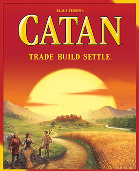

Catan
Bangun pemukiman, kumpulkan sumber daya, dan jadi penguasa pulau Catan. Salah satu game strategi paling populer untuk pemula maupun pemain berpengalaman.
- Jumlah pemain
- 3-4 pemain
- Durasi main
- 60-90 menit
- Kategori
- Strategy
- Tingkat kesulitan
- Menengah
- Rating komunitas
- 4.3 / 5